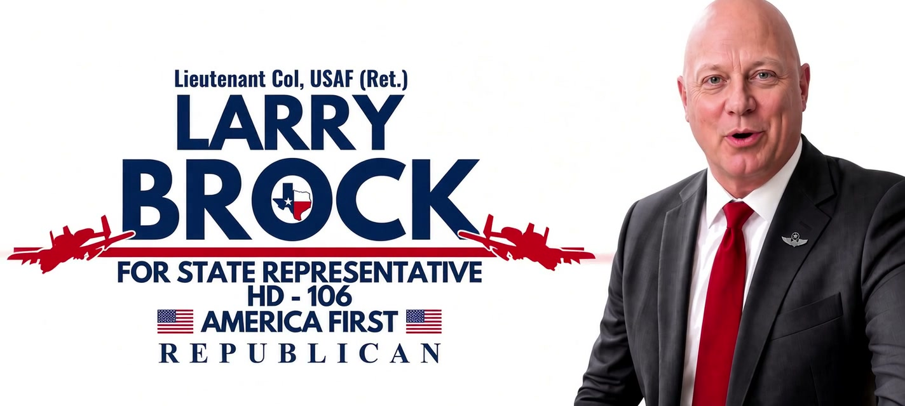

House District 106
The Agenda
Published priorities for Texas — clear, constitutional, and House-first.
-
Property Tax Relief
Protect homeowners and small businesses from Austin’s tax squeeze.
-
Austin’s Belt
Push back on overreach. Keep local control where Texans live and work.
-
Secure Elections
One citizen, one vote — election integrity Texans can trust.
-
Power & Water
Reliable grids and water — infrastructure that keeps Texas running.
-
Roads & Mobility
Fix congestion and invest in the roads North Texas depends on.
-
Judicial Accountability
Courts that answer to the Constitution — and to the people of Texas.
About Larry
Tested Leadership
Retired Air Force Lieutenant Colonel. Fifth-generation Texan. Constitutional conservative — House first, Texas first.
Donate Today